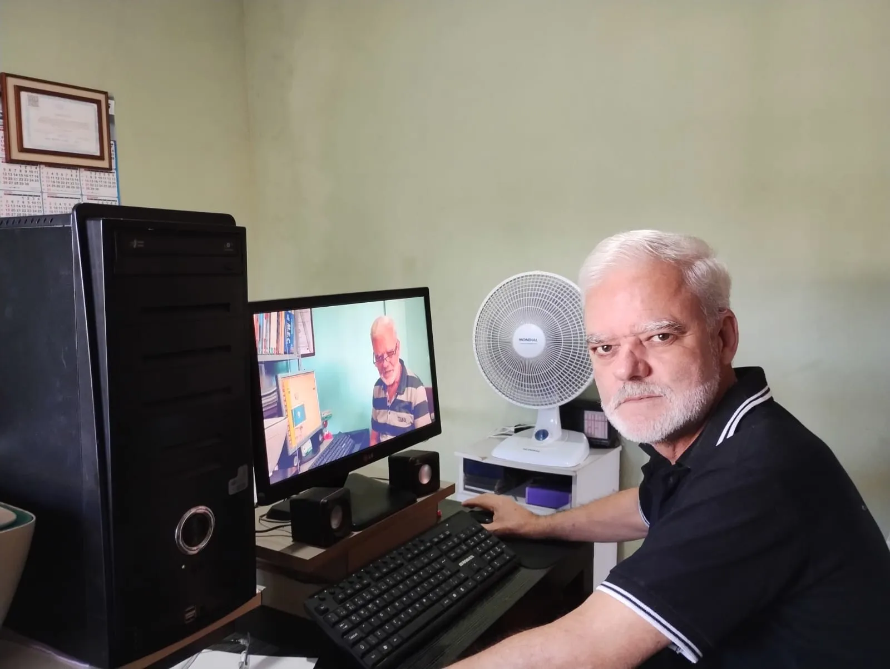
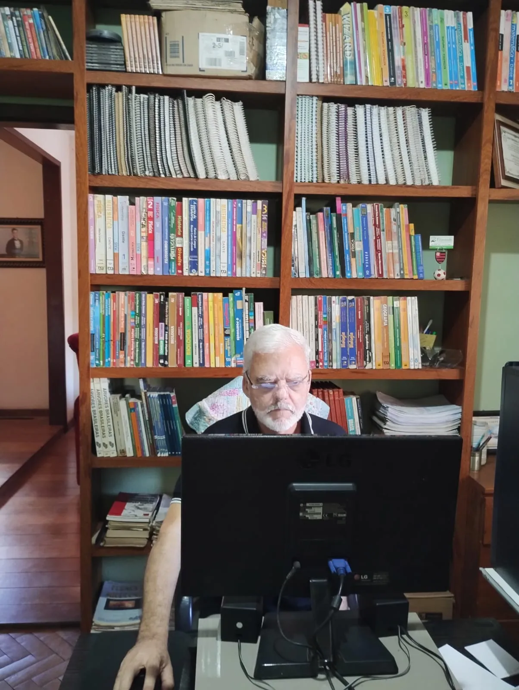
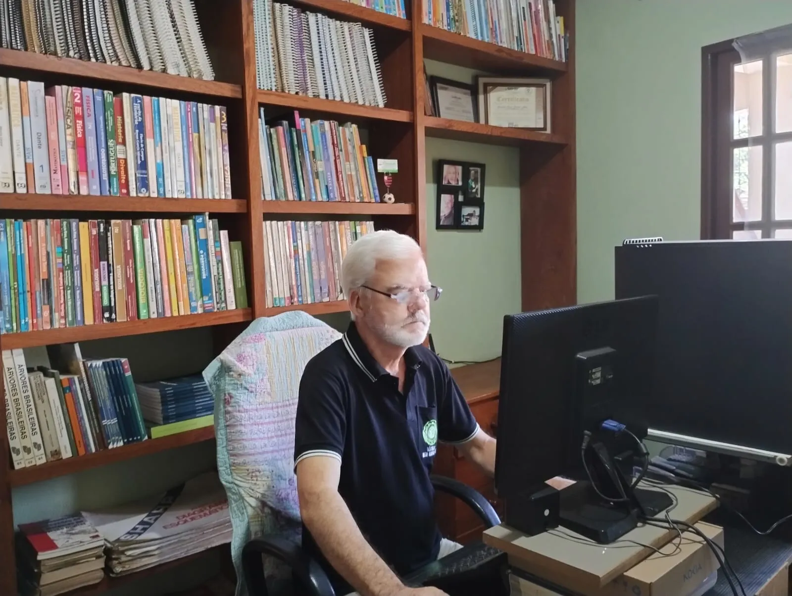

Emitimos e acompanhamos todos os tipos de licenças, com atuação técnica em processos, obras e empreendimentos:
Oficinas mecânicas / Lanternagem e pintura / Lavadores de carro: Gestão de resíduos perigosos, controle de efluentes, contenção e destino de óleos e solventes.
Ferro-velho: Controle de material reciclável, prevenção de contaminação do solo e água, plano de gestão de resíduos.
Loteadoras / Loteamentos: Estudos de viabilidade ambiental, planos de compensação e condicionantes para aprovação municipal/estadual.
Reflorestamento / Recuperação de Área Degradada: Projetos técnicos, seleção de espécies nativas, acompanhamento e relatórios de sucesso.
Jardinagem / Podas de árvores: Laudos de supressão, autorizações e projetos de recomposição vegetal.
Serralheria / Serraria / Marmoraria: Controle de ruído, gestão de resíduos, efluentes e licenciamento específico.
Posto de combustível: Plano de emergência, licenciamento ambiental, controle de solo e águas subterrâneas.
Aterro sanitário / Cemitério / ETE: Estudos técnicos, controle de gases, lixiviados e monitoramento exigido por órgãos ambientais.
Fossa séptica: Projetos, relatórios e recomendações para implantação e manutenção.
CAR / Regularização fundiária: Diagnóstico, georreferenciamento e adequação ambiental.
Antenas e Telecomunicações: Licenciamento ambiental completo para instalação e operação de torres e infraestrutura.
Indústrias e Cerâmicas: Regularização completa para fábricas, olarias, tornearias, usinas e aterros sanitários.
Galeria
O trabalho por trás dos resultados
Conheça de perto nossa rotina de vistorias, estudos e atendimento técnico em todo o Espírito Santo.



